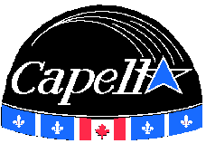

Capella Figure 1 - Orion : Étoile de la constellation du Cocher à 45 années-lumière de la Terre. Le GAUL réalisa une deuxième fusée expérimentale qui sera destinée à être lancée au Québec dans le but de promouvoir l'aérospatial amateur. Cette fusée, nommée Capella, sera l'une des premières fusées québécoises dotée d'un appareillage électronique d'une certaine complexité à être lancée ici au Québec. Elle a en outre à son bord, divers capteurs, un ordinateur de vol, un séquenceur, plusieurs petits propulseurs et un parachute pour permettre la descente au sol en douceur. Cependant, vu les réglementations en vigueur au Canada, nous ne pourrons utiliser des moteurs d'une puissance comparable à celle obtenue lors des campagnes de lancement françaises. Dans les sections suivantes, nous donnerons une brève description de Capella. Puisque plusieurs items d'Artémis se répètent dans Capella, la description de ceux-ci n'y figure pas une seconde fois. Il vous faudra donc vous référer aux sections adjacentes. 1. La structure mécaniqueLa structure mécanique de Capella comportera trois blocs bien distincts. Le premier bloc est celui de propulsion. Il sera composé de plusieurs petits moteurs qui sont regroupés et mis à feu simultanément. Ils nous permettent d'atteindre une altitude d'environ 500 mètres, en théorie. Ce bloc comprend également les ailerons servant à la stabilité de la fusée. Le second bloc inclue le système de récupération de la fusée soit principalement le parachute et le système d'éjection de la porte. Le troisième bloc comprend tout l'appareillage électronique de la fusée et l'instrumentation relié aux capteurs. Ce bloc inclue également l'alimentation de la fusée. La pointe de la fusée est faite en fibre de carbone et/ou en balsa. Le fuselage de Capella est fait en plastique rigide dans le but de diminuer son poids.2. L'électroniqueLa section électronique de Capella se compose d'un ordinateur de vol, d'un séquenceur, de divers capteurs et de l'électronique relié à ceux-ci. L'ordinateur de vol dirige toutes les opérations durant la durée du vol soit l'éjection de la porte du parachute et l'acquisition des données expérimentales durant toute la durée de son vol. Il emmagasine ces données en mémoire durant le vol et à la fin, lors de la récupération de la fusée, les transmet à un PC au sol pour nous permettre de les lire et les analyser. Le séquenceur sert de système de secours pour l'éjection de la porte et possède une alimentation indépendante de l'ordinateur de vol.3. Les expériencesDeux expériences bien distinctes seront effectuées à bord de Capella durant son vol. La première est une mesure de la vitesse par le biais d'un capteur de pression et d'un tube de pitot. La deuxième est la prise de photo aérienne. Elle sera commandée par un signal provenant de l'ordinateur de vol. Ce signal déclenchera à chaque fois l'appareil photo. Une dernière expérience mesure l'élévation de température dans la section de propulsion par le biais de plusieurs thermocouples. |
|
Concepteur: Steve Potvin Dernière modification: 22/07/1999 |